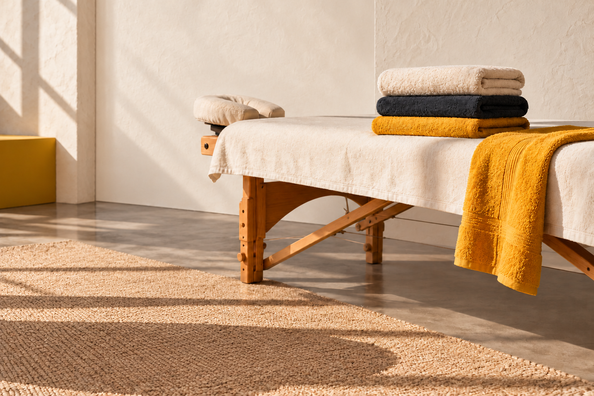

Deportivo
Descarga, recuperación y trabajo profundo para personas activas.
Masaje deportivo y terapéutico en Fuengirola. Una forma más inteligente de cuidar el cuerpo, recuperar y seguir.
Reservar por WhatsApp →
Tratamientos personalizados para deporte, trabajo, tensión muscular y bienestar. Elige el punto de partida; el resto lo vemos en sesión.
Descarga, recuperación y trabajo profundo para personas activas.
Calma, circulación y una sensación de cuerpo más ligero.
Hombros, espalda, cadera, core y piernas según tu deporte.
Cuello, hombros, cadera y postura después de muchas horas sentado.
Trabajo intraoral y externo sobre masetero y tensión mandibular.
Técnica suave y rítmica para acompañar el bienestar corporal.
Sofía trabaja desde la escucha y la precisión: entiende qué necesitas, adapta la sesión y te acompaña a volver a sentir confianza en tu cuerpo.
Hablar con Sofía →Consulta horarios y reserva directamente por WhatsApp. Lunes a viernes de 9:00 a 19:00; sábados de 10:00 a 15:00; domingos de 10:00 a 14:00.
Escribir ahora →WhatsApp / teléfono
+34 743 01 75 27
Google Maps
Ver reseñas y ubicación →